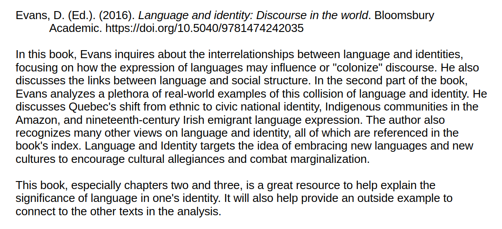
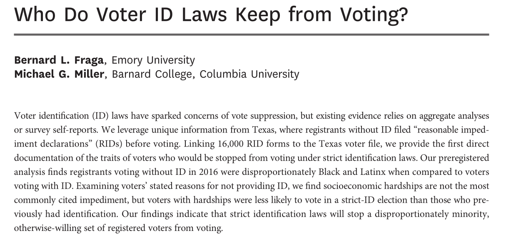

Today’s Agenda
Designing a Research Proposal
- What is a literature review? (LR)
Justin Leinaweaver (Spring 2026)
Course Outline

Annotated Bibliography

Baglione (2019) Chapter 4
What is a literature review and why is it important?
Baglione (2019) Chapter 4
“…the LR is a coherent essay that identifies, explains, names, and assesses the answers to your research question in an interesting way” (90).
The LR “explains to the reader how scholars have answered your Research Question (RQ), in both its generic and specific forms” (90).
“In addition, … the LR assesses the strengths and weaknesses of each school, examining the quality of the logic and how well each approach accounts for cases other than the ones being addressed directly in the paper” (90).
Baglione (2019) Chapter 4
“Schools of Thought”
Each “school” represents a group of articles in your AB that “share common elements”
The “schools” become the premises in your literature review argument (e.g. what organizes the meso structure of the paper)
Baglione (2019) Chapter 4
How do we generate “schools of thought”?
Chronological order
Least to most preferred
By theoretical mechanism
By data source(s)
By case
Baglione (2019) Chapter 4
The Fundamentals of the Literature Review
- What are the relevant schools?
- How does each answer the question?
- Strengths and weaknesses of each school?
- Which is “best” for your project?

“How Might Voter ID Laws Shape The Electorate?”
- What are the “schools of thought”?
How well does this literature review accomplish the fundamentals?
- What are the relevant schools?
- How does each answer the question?
- Strengths and weaknesses of each school?
- Which is “best” for your project?
“Role Models And Women’s Political Ambition”
- What are the “schools of thought”?
- How well does this literature review accomplish the FOUR fundamentals?
“Existing Research On Lockdown Measures And Violence”
- What are the “schools of thought”?
- How well does this literature review accomplish the FOUR fundamentals?
Course Outline
For Next Class
Identify and Evaluate the LR Structures in your Bibliography
How is each article’s LR organized (e.g. “schools”)?
Strengths and weaknesses of each LR?
- Details on Canvas